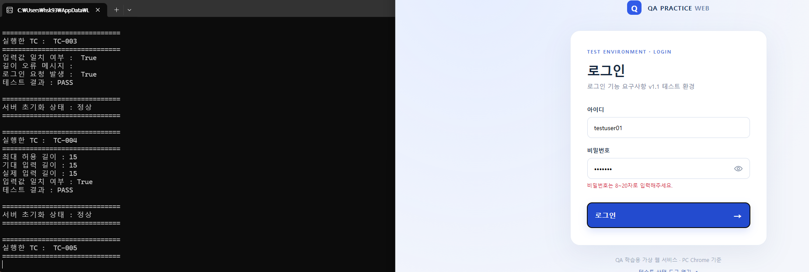
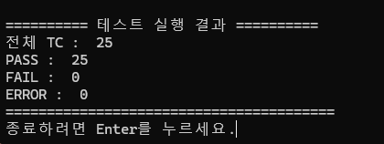
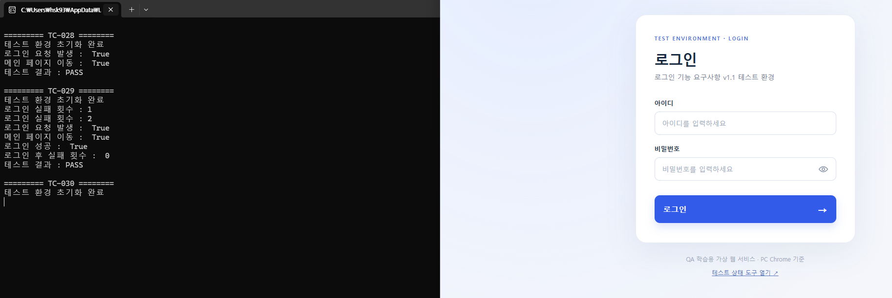
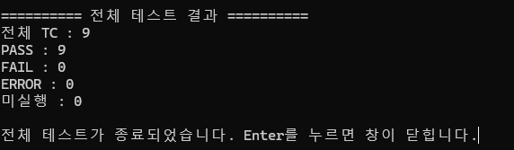

입력값과 브라우저 검증
아이디·비밀번호 길이/허용 문자, 공백 입력, 오류 메시지의 표시 및 제거 여부를 검사합니다. 유효한 입력은 로그인 요청 발생 여부도 확인합니다.
수동 검증에서 확인한 테스트 케이스 중 반복 실행에 적합한 항목을 Python · Selenium으로 자동화했습니다. 테스트 데이터 준비부터 브라우저 조작, 서버 요청 및 상태 확인, 실행 결과 판정까지의 흐름을 기록했습니다.
로그인 기능 QA에서 설계한 43개 테스트 케이스를 먼저 수동 실행해 모두 PASS로 기록했습니다. 이후 반복 수행과 자동 판정의 효율을 고려하여 34개를 자동화 대상으로 선택했습니다.
| 프로젝트 성격 | 가상의 로컬 로그인 웹서비스 대상 개인 QA 실습 |
|---|---|
| 실행 환경 | Windows · PC Chrome · Flask (localhost:5000) |
| 사용 기술 | Python, Selenium WebDriver, CSV, Requests, Chrome Performance Log |
| 자동화 범위 | Validation 25건 (TC-001~022, 025~027) / Authentication 9건 (TC-028~036) |
| 결과 근거 | 제출된 실행 결과 스크린샷 기준 Validation 25 PASS, Authentication 9 PASS |
| 테스트 대상 제작 | 가상 요구사항을 바탕으로 ChatGPT와 함께 구성한 로컬 Flask 웹 환경. QA 분석·설계·실행 및 자동화 실습과 역할을 구분합니다. |
CSV의 각 TC를 읽어 독립적인 테스트 환경을 준비한 다음 실제 Chrome을 조작하고, 결과를 자동 판정합니다.
자동화하지 않은 9개 TC 역시 수동 실행으로 검증했습니다. 이번 실습에서는 먼저 반복 입력·인증 검증에 자동화를 집중하고, 시각적 상호작용이나 시간·상태 변화 검증 등은 수동 테스트를 유지하는 범위 선택을 했습니다.
TC-001~022, TC-025~036
입력 길이·형식, 필수값, 로그인 성공/실패, 오류 메시지, 일부 계정 상태 검증TC-023~024, TC-037~043
비밀번호 표시/숨기기, 나머지 계정 잠금·해제 시나리오, 버튼 및 로그아웃 관련 검증TC 수 기준 자동화 비율 34/43 = 79.1%. 기능·코드 커버리지를 의미하지 않습니다. 9건을 자동화하기 불가능하다는 뜻도 아닙니다.
아이디·비밀번호 길이/허용 문자, 공백 입력, 오류 메시지의 표시 및 제거 여부를 검사합니다. 유효한 입력은 로그인 요청 발생 여부도 확인합니다.
정상 로그인 시 /main 이동, 인증 실패 메시지, 로그인 실패 횟수 초기화, 5번째 실패 메시지 변화와 오류 우선순위를 검증합니다.
매 TC 전에 브라우저 쿠키 및 서버의 실패 횟수·잠금 상태를 초기화해 선행 테스트의 상태가 뒤 테스트에 영향을 주지 않도록 구성했습니다.
Chrome Performance Log에서 Network.requestWillBeSent 이벤트를 찾아 POST /api/login 발생 여부를 검증합니다.
전체 코드 대신 실제 Python 파일에서 검증의 핵심이 되는 함수만 발췌했습니다. 전체 소스는 아래 다운로드 영역에서 확인할 수 있습니다.
Chrome Performance Log에서 Network.requestWillBeSent를 조회하여 POST /api/login 요청을 탐지합니다. 입력 형식 오류일 때는 요청이 없어야 하는지 확인할 때 사용했습니다.
def check_login_request(driver, timeout=5):
end_time = time.monotonic() + timeout
while time.monotonic() < end_time:
logs = driver.get_log("performance")
for log in logs:
message = json.loads(log["message"])["message"]
if message["method"] == "Network.requestWillBeSent":
request = message["params"]["request"]
if (request["url"].endswith("/api/login")
and request["method"] == "POST"):
return True
time.sleep(0.1)
return False로컬 테스트 도구의 API로 누적된 실패 횟수와 잠금 상태를 초기화합니다. 독립적인 TC 실행을 위한 준비 단계입니다.
def reset_test_state():
response = requests.post(
f"{BASE_URL}/__test/api/reset",
json = {"username": "all"},
timeout = 5
)
response.raise_for_status()
return response.status_code == 200정상 로그인 이후 서버의 해당 계정 실패 횟수가 0으로 초기화되었는지 확인합니다.
def check_failure_count_reset(driver, username):
# 로그인 성공 및 메인 페이지 이동 확인
login_success = check_login_success(driver)
state = get_test_state()
# 해당 계정의 실패 횟수를 확인
failed_count = get_failure_count(username)
is_pass = (
login_success
and failed_count == 0
)
print("로그인 성공 : ", login_success)
print("로그인 후 실패 횟수 : ", failed_count)
return is_pass제출받은 실제 콘솔 및 브라우저 스크린샷을 사용했습니다. 수동 테스트 43건 결과와 구분하여 자동화 실행 결과를 기록합니다.




※ 캡처에 보이는 값은 해당 실행 시점에 프로그램이 출력한 결과입니다. 사이트에서 테스트를 새로 실행한 결과는 아닙니다.
업로드한 CSV에 등록된 TC ID와 기대 결과 유형을 정리했습니다. 비밀번호 등 로그인 입력값은 웹 미리보기에서 제외하고 원본 CSV 파일로 제공합니다.
34건 표시
| TC ID | 분류 | 기대 결과 유형 | 실행 기록 |
|---|---|---|---|
| TC-001 | 입력값 검증 | FORMAT_ERROR | PASS 기록 |
| TC-002 | 입력값 검증 | AUTH_REQUEST | PASS 기록 |
| TC-003 | 입력값 검증 | AUTH_REQUEST | PASS 기록 |
| TC-004 | 입력값 검증 | INPUT_LIMIT | PASS 기록 |
| TC-005 | 입력값 검증 | FORMAT_ERROR | PASS 기록 |
| TC-006 | 입력값 검증 | AUTH_REQUEST | PASS 기록 |
| TC-007 | 입력값 검증 | AUTH_REQUEST | PASS 기록 |
| TC-008 | 입력값 검증 | INPUT_LIMIT | PASS 기록 |
| TC-009 | 입력값 검증 | FORMAT_ERROR | PASS 기록 |
| TC-010 | 입력값 검증 | AUTH_REQUEST | PASS 기록 |
| TC-011 | 입력값 검증 | AUTH_REQUEST | PASS 기록 |
| TC-012 | 입력값 검증 | FORMAT_ERROR | PASS 기록 |
| TC-013 | 입력값 검증 | FORMAT_ERROR | PASS 기록 |
| TC-014 | 입력값 검증 | FORMAT_ERROR | PASS 기록 |
| TC-015 | 입력값 검증 | AUTH_REQUEST | PASS 기록 |
| TC-016 | 입력값 검증 | FORMAT_ERROR | PASS 기록 |
| TC-017 | 입력값 검증 | FORMAT_ERROR | PASS 기록 |
| TC-018 | 입력값 검증 | FORMAT_ERROR | PASS 기록 |
| TC-019 | 입력값 검증 | FORMAT_ERROR | PASS 기록 |
| TC-020 | 입력값 검증 | FORMAT_ERROR | PASS 기록 |
| TC-021 | 입력값 검증 | FORMAT_ERROR | PASS 기록 |
| TC-022 | 입력값 검증 | FORMAT_ERROR | PASS 기록 |
| TC-025 | 입력값 검증 | REQUIRED_ERROR | PASS 기록 |
| TC-026 | 입력값 검증 | REQUIRED_ERROR | PASS 기록 |
| TC-027 | 입력값 검증 | REQUIRED_ERROR | PASS 기록 |
| TC-028 | 인증·오류 | LOGIN_SUCCESS | PASS 기록 |
| TC-029 | 인증·오류 | RESET_FAILURE_COUNT | PASS 기록 |
| TC-030 | 인증·오류 | LOGIN_FAILURE | PASS 기록 |
| TC-031 | 인증·오류 | LOGIN_FAILURE | PASS 기록 |
| TC-032 | 인증·오류 | ACCOUNT_LOCKED | PASS 기록 |
| TC-033 | 인증·오류 | ACCOUNT_LOCKED | PASS 기록 |
| TC-034 | 인증·오류 | ID_ERROR_PRIORITY | PASS 기록 |
| TC-035 | 인증·오류 | PW_ERROR_PRIORITY | PASS 기록 |
| TC-036 | 인증·오류 | INDEPENDENT_ERROR_CLEAR | PASS 기록 |
테스트 스크립트 2개와 CSV 입력 데이터 2개를 공개합니다. GitHub Pages는 정적 웹사이트이므로 이 화면에서 Flask 또는 Selenium을 실행하지는 않습니다.
01_data 폴더를 기준으로 합니다. 따라서 실행 시에는 README의 권장 폴더 구조에 맞춰 배치하고 http://127.0.0.1:5000 Flask 테스트 서버를 실행해야 합니다. 공개 ZIP에는 실제 데이터베이스나 세션 비밀키를 포함하지 않았습니다.일부 TC는 서버 요청 발생 또는 메시지 변경만 검증합니다. 잠금 메시지의 정확한 일치·잠금 상태 등 기대 결과를 추가로 확인할 수 있습니다.
현재 결과는 콘솔과 스크린샷 중심입니다. 실행별 CSV 결과 저장과 FAIL/ERROR 발생 시 자동 캡처를 후속 개선 항목으로 남깁니다.